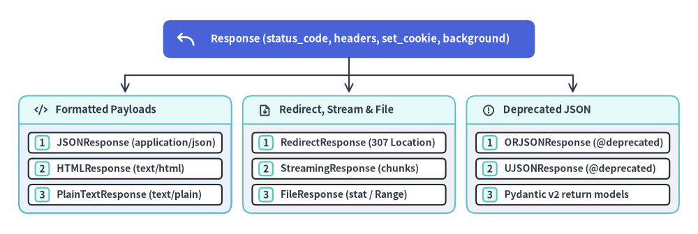

fastapi.responses
fastapi.responses は、Starlette の ASGI レスポンスクラス群（Response、JSONResponse、HTMLResponse、PlainTextResponse、RedirectResponse、StreamingResponse、FileResponse）に加え、FastAPI v0.162.2 で非推奨（@deprecated）となった JSON サブクラス（ORJSONResponse、UJSONResponse）を公開します。パスオペレーションから Response インスタンスを直接返すか、ルートデコレータの response_class=... に指定することで、ステータスコード、Content-Type ヘッダー、Cookie、チャンクストリーミング、バックグラウンドタスクを制御できます。

classResponse#
基底となる ASGI HTTP レスポンスクラス（from fastapi import Response または from fastapi.responses import Response）です。charset = "utf-8" で文字列またはバイト列ペイロードをエンコードし、raw_headers 内に content-length と content-type を構築するほか、set_cookie() / delete_cookie() による Set-Cookie ヘッダー管理、およびレスポンス送信後に実行される background タスクをサポートします。
class Response:
media_type: str | None = None
charset: str = "utf-8"
def __init__(
self,
content: Any = None,
status_code: int = 200,
headers: Mapping[str, str] | None = None,
media_type: str | None = None,
background: BackgroundTask | None = None,
) -> None: ...
def set_cookie(
self,
key: str,
value: str = "",
max_age: int | None = None,
expires: datetime | str | int | None = None,
path: str | None = "/",
domain: str | None = None,
secure: bool = False,
httponly: bool = False,
samesite: Literal["lax", "strict", "none"] | None = "lax",
partitioned: bool = False,
) -> None: ...
def delete_cookie(
self,
key: str,
path: str = "/",
domain: str | None = None,
secure: bool = False,
httponly: bool = False,
samesite: Literal["lax", "strict", "none"] | None = "lax",
partitioned: bool = False,
) -> None: ...
パラメータ・属性・メソッド#
| 名前 | 種別 | 型 / デフォルト | 説明 |
|---|---|---|---|
content |
引数 | Any = None |
render(content) を通じて self.body に変換される bytes、memoryview、または str。 |
status_code |
引数 / 属性 | int = 200 |
http.response.start で送信される HTTP ステータスコード。 |
headers |
引数 / プロパティ | MutableHeaders |
self.raw_headers を背後で操作する大文字・小文字非依存の可変ヘッダー辞書。 |
raw_headers |
属性 | list[tuple[bytes, bytes]] |
ASGI サーバーへ送信される小文字 Latin-1 エンコード済みの (name, value) バイトタプル配列。 |
media_type |
引数 / 属性 | str | None = None |
Content-Type に設定される MIME タイプ（text/* の場合は ; charset=utf-8 が自動付与）。 |
background |
引数 / 属性 | BackgroundTask | None = None |
http.response.body 送信完了後に実行される Starlette の BackgroundTask / BackgroundTasks。 |
set_cookie() |
メソッド | None |
raw_headers に Set-Cookie ヘッダーを追加します（セッション Cookie には __Host- プレフィックス、secure=True、httponly=True、samesite="lax" または "strict" を付与してください）。 |
delete_cookie() |
メソッド | None |
set_cookie(..., max_age=0, expires=0) を呼び出して既存 Cookie を即時失効させます。 |
使用例#
import secrets
from fastapi import FastAPI, Response
from fastapi.testclient import TestClient
app = FastAPI()
@app.post("/auth/cookie-login")
def login_with_cookie(response: Response) -> dict[str, str]:
session_token = secrets.token_urlsafe(24)
response.status_code = 201
response.headers["X-Content-Type-Options"] = "nosniff"
response.set_cookie(
key="__Host-session",
value=session_token,
max_age=3600,
path="/",
secure=True,
httponly=True,
samesite="lax",
)
return {"status": "established"}
@app.post("/auth/cookie-logout")
def logout_cookie() -> Response:
resp = Response(content=b"", status_code=204)
resp.delete_cookie(key="__Host-session", path="/", secure=True, httponly=True)
return resp
client = TestClient(app)
login_res = client.post("/auth/cookie-login")
assert login_res.status_code == 201
assert "HttpOnly" in login_res.headers["set-cookie"]
assert any(k == b"set-cookie" for k, _ in login_res.headers.raw)
logout_res = client.post("/auth/cookie-logout")
assert logout_res.status_code == 204
assert "Max-Age=0" in logout_res.headers["set-cookie"]
classJSONResponse#
標準ライブラリの json.dumps(..., ensure_ascii=False, allow_nan=False, separators=(",", ":")) を用いて Python オブジェクトを UTF-8 JSON バイト列へ変換するレスポンスクラスです（既定 media_type = "application/json"）。Pydantic モデルを介さずにカスタムステータスコードやヘッダーを直接返したい場合や、カスタム例外ハンドラー（@app.exception_handler）内で使用します。
class JSONResponse(Response):
media_type = "application/json"
def __init__(
self,
content: Any,
status_code: int = 200,
headers: Mapping[str, str] | None = None,
media_type: str | None = None,
background: BackgroundTask | None = None,
) -> None: ...
パラメータ#
| パラメータ | 型 | デフォルト | 説明 |
|---|---|---|---|
content |
Any |
(必須) | JSON シリアライズ可能な Python 値（datetime / UUID / BaseModel を含む場合は fastapi.encoders.jsonable_encoder を併用）。 |
status_code |
int |
200 |
HTTP ステータスコード（例: 202、400、429）。 |
headers |
Mapping[str, str] | None |
None |
追加する HTTP レスポンスヘッダー。 |
media_type |
str | None |
None |
既定の "application/json" を上書きする MIME タイプ（例: "application/problem+json"）。 |
background |
BackgroundTask | None |
None |
レスポンス送信後に実行するバックグラウンドタスク。 |
使用例#
from fastapi import FastAPI
from fastapi.responses import JSONResponse
from fastapi.testclient import TestClient
app = FastAPI()
@app.post("/jobs")
def enqueue_job() -> JSONResponse:
return JSONResponse(
content={"job_id": "job-42", "state": "queued"},
status_code=202,
headers={"Cache-Control": "no-store"},
)
client = TestClient(app)
res = client.post("/jobs")
assert res.status_code == 202
assert res.headers["content-type"] == "application/json"
assert res.headers["cache-control"] == "no-store"
assert res.json() == {"job_id": "job-42", "state": "queued"}
classHTMLResponse#
media_type = "text/html"（Content-Type: text/html; charset=utf-8）で UTF-8 HTML ドキュメントを返却します。外部入力を埋め込む際は XSS を防ぐため、必ず html.escape() または自動エスケープ有効なテンプレートエンジン（Jinja2Templates など）を使用し、厳格な Content-Security-Policy ヘッダーを設定してください。
class HTMLResponse(Response):
media_type = "text/html"
def __init__(
self,
content: Any = None,
status_code: int = 200,
headers: Mapping[str, str] | None = None,
media_type: str | None = None,
background: BackgroundTask | None = None,
) -> None: ...
パラメータ#
| パラメータ | 型 | デフォルト | 説明 |
|---|---|---|---|
content |
Any |
None |
HTML の str または bytes ペイロード。 |
status_code |
int |
200 |
HTTP ステータスコード。 |
headers |
Mapping[str, str] | None |
None |
セキュリティ・キャッシュ制御用の HTTP ヘッダー（Content-Security-Policy、X-Frame-Options など）。 |
media_type |
str | None |
None |
既定値は "text/html"。 |
background |
BackgroundTask | None |
None |
レスポンス送信後の任意のバックグラウンドタスク。 |
使用例#
import html
from fastapi import FastAPI
from fastapi.responses import HTMLResponse
from fastapi.testclient import TestClient
app = FastAPI()
@app.get("/welcome", response_class=HTMLResponse)
def welcome_page(name: str = "Developer") -> HTMLResponse:
safe_name = html.escape(name, quote=True)
body = f"<!doctype html><html><body><h1>Hello, {safe_name}</h1></body></html>"
return HTMLResponse(
content=body,
headers={
"Content-Security-Policy": "default-src 'self'; object-src 'none'",
"X-Content-Type-Options": "nosniff",
},
)
client = TestClient(app)
res = client.get("/welcome", params={"name": "<Admin>"})
assert res.status_code == 200
assert "text/html" in res.headers["content-type"]
assert "<Admin>" in res.text
classPlainTextResponse#
media_type = "text/plain"（Content-Type: text/plain; charset=utf-8）でプレーンテキストを返却します。/robots.txt、Prometheus メトリクス出力、ヘルスチェック応答などに適しています。
class PlainTextResponse(Response):
media_type = "text/plain"
def __init__(
self,
content: Any = None,
status_code: int = 200,
headers: Mapping[str, str] | None = None,
media_type: str | None = None,
background: BackgroundTask | None = None,
) -> None: ...
パラメータ#
| パラメータ | 型 | デフォルト | 説明 |
|---|---|---|---|
content |
Any |
None |
プレーンテキストの str または bytes ボディ。 |
status_code |
int |
200 |
HTTP ステータスコード。 |
headers |
Mapping[str, str] | None |
None |
任意の HTTP ヘッダー。 |
media_type |
str | None |
None |
既定値は "text/plain"。 |
background |
BackgroundTask | None |
None |
レスポンス送信後の任意のバックグラウンドタスク。 |
使用例#
from fastapi import FastAPI
from fastapi.responses import PlainTextResponse
from fastapi.testclient import TestClient
app = FastAPI()
@app.get("/robots.txt", response_class=PlainTextResponse)
def robots_txt() -> str:
return "User-agent: *\nDisallow: /admin/"
client = TestClient(app)
res = client.get("/robots.txt")
assert res.status_code == 200
assert res.headers["content-type"] == "text/plain; charset=utf-8"
assert res.text.startswith("User-agent: *")
classRedirectResponse#
Location レスポンスヘッダーに url を設定して HTTP リダイレクトを実行します（URL エンコード対象文字は自動エスケープされます）。既定の status_code = 307（Temporary Redirect）は元の HTTP メソッドとボディを維持します。POST フォーム送信後に GET ページへ遷移させる場合は status_code = 303（See Other）を指定します。
class RedirectResponse(Response):
def __init__(
self,
url: str | URL,
status_code: int = 307,
headers: Mapping[str, str] | None = None,
background: BackgroundTask | None = None,
) -> None: ...
パラメータ#
| パラメータ | 型 | デフォルト | 説明 |
|---|---|---|---|
url |
str | starlette.datastructures.URL |
(必須) | Location ヘッダーに設定される遷移先 URL（外部入力由来の場合は許可リストで検証してください）。 |
status_code |
int |
307 |
リダイレクト用 HTTP ステータスコード（301、302、303、307、308）。 |
headers |
Mapping[str, str] | None |
None |
リダイレクト応答に付与する追加 HTTP ヘッダー。 |
background |
BackgroundTask | None |
None |
レスポンス送信後の任意のバックグラウンドタスク。 |
使用例#
from fastapi import FastAPI
from fastapi.responses import RedirectResponse
from fastapi.testclient import TestClient
app = FastAPI()
@app.get("/v1/docs-legacy")
def legacy_redirect() -> RedirectResponse:
return RedirectResponse(url="/v2/reference", status_code=308)
client = TestClient(app)
res = client.get("/v1/docs-legacy", follow_redirects=False)
assert res.status_code == 308
assert res.headers["location"] == "/v2/reference"
classStreamingResponse#
非同期イテレータ（AsyncIterable[bytes | str]）または同期イテレータ（Iterable[bytes | str]）からチャンク単位でレスポンスボディを逐次送信します。ペイロード全体をメモリ上に保持せず、かつ ASGI の http.disconnect を並行監視してクライアント途中切断時に生成処理を安全に停止します。
class StreamingResponse(Response):
body_iterator: AsyncIterable[bytes]
def __init__(
self,
content: ContentStream,
status_code: int = 200,
headers: Mapping[str, str] | None = None,
media_type: str | None = None,
background: BackgroundTask | None = None,
) -> None: ...
パラメータ#
| パラメータ | 型 | デフォルト | 説明 |
|---|---|---|---|
content |
AsyncIterable[str | bytes | memoryview] | Iterable[str | bytes | memoryview] |
(必須) | チャンクを順次返す同期または非同期ジェネレータ（str は charset = "utf-8" で自動エンコード）。 |
status_code |
int |
200 |
HTTP ステータスコード。 |
headers |
Mapping[str, str] | None |
None |
任意の HTTP ヘッダー（ダウンロード用の Content-Disposition など）。 |
media_type |
str | None |
None |
"application/x-ndjson" や "text/csv" などの MIME タイプ。 |
background |
BackgroundTask | None |
None |
ストリーム完了後に実行されるクリーンアップタスク。 |
使用例#
from collections.abc import AsyncIterator
import json
from fastapi import FastAPI
from fastapi.responses import StreamingResponse
from fastapi.testclient import TestClient
app = FastAPI()
async def generate_ndjson() -> AsyncIterator[bytes]:
for idx in range(1, 4):
yield (json.dumps({"row": idx}) + "\n").encode("utf-8")
@app.get("/exports/events.ndjson")
def export_events() -> StreamingResponse:
return StreamingResponse(
generate_ndjson(),
media_type="application/x-ndjson",
headers={"X-Content-Type-Options": "nosniff"},
)
client = TestClient(app)
res = client.get("/exports/events.ndjson")
lines = [json.loads(line) for line in res.text.strip().splitlines()]
assert res.status_code == 200
assert res.headers["content-type"] == "application/x-ndjson"
assert lines == [{"row": 1}, {"row": 2}, {"row": 3}]
classFileResponse#
ファイルシステム上のファイルを 64 KiB チャンク（chunk_size = 64 * 1024）で非同期ストリーミング配信し、Content-Length、Last-Modified、ETag、拡張子に基づく Content-Type（mimetypes.guess_type）、Content-Disposition、および HTTP Range（206 Partial Content）リクエストに自動対応します。ユーザー入力に由来するファイル名を扱う際は、必ずパスを解決して許可ディレクトリ境界内であることを検証してください。
class FileResponse(Response):
chunk_size = 64 * 1024
def __init__(
self,
path: str | os.PathLike[str],
status_code: int = 200,
headers: Mapping[str, str] | None = None,
media_type: str | None = None,
background: BackgroundTask | None = None,
filename: str | None = None,
stat_result: os.stat_result | None = None,
content_disposition_type: str = "attachment",
) -> None: ...
パラメータ#
| パラメータ | 型 | デフォルト | 説明 |
|---|---|---|---|
path |
str | os.PathLike[str] |
(必須) | 配信対象ファイルの検証済みファイルシステムパス。 |
status_code |
int |
200 |
HTTP ステータスコード（有効な Range リクエスト時は自動で 206）。 |
headers |
Mapping[str, str] | None |
None |
追加する HTTP ヘッダー（例: X-Content-Type-Options: nosniff）。 |
media_type |
str | None |
None |
明示的な MIME タイプ。None の場合は filename または path から推定（不明時は "text/plain"）。 |
background |
BackgroundTask | None |
None |
配信完了後に一時ファイル削除などを実行するバックグラウンドタスク。 |
filename |
str | None |
None |
指定時に Content-Disposition: <content_disposition_type>; filename="<filename>" を自動付与。 |
stat_result |
os.stat_result | None |
None |
事前取得済みの os.stat() 結果（None 時は anyio.to_thread で非同期取得）。 |
content_disposition_type |
str |
"attachment" |
配置モード（"attachment" はダウンロードを強制、"inline" はブラウザ内表示）。 |
使用例#
from pathlib import Path
import tempfile
from fastapi import FastAPI, HTTPException
from fastapi.responses import FileResponse
from fastapi.testclient import TestClient
with tempfile.TemporaryDirectory() as tmp_dir:
export_root = Path(tmp_dir).resolve()
report_path = export_root / "summary.csv"
report_path.write_text("id,total\n1,42\n", encoding="utf-8")
app = FastAPI()
@app.get("/downloads/{report_name}")
def download_report(report_name: str) -> FileResponse:
safe_name = Path(report_name).name
candidate = (export_root / safe_name).resolve()
if not candidate.is_relative_to(export_root) or not candidate.is_file():
raise HTTPException(status_code=404, detail="Report not found")
return FileResponse(
path=candidate,
filename=safe_name,
media_type="text/csv",
content_disposition_type="attachment",
headers={"X-Content-Type-Options": "nosniff"},
)
client = TestClient(app)
res = client.get("/downloads/summary.csv")
assert res.status_code == 200
assert 'attachment; filename="summary.csv"' in res.headers["content-disposition"]
assert "etag" in res.headers
assert res.text == "id,total\n1,42\n"
deprecatedORJSONResponse#
[!WARNING] FastAPI 非推奨（
FastAPIDeprecationWarning）:ORJSONResponseはv0.162.2で@deprecated(...)指定されています。パスオペレーションに戻り値の型アノテーション（-> Itemや-> list[Item]）またはresponse_model=...を設定すると、Pydantic v2 の Rust 製シリアライザ（pydantic-core）が直接 JSON バイト列へ高速シリアライズするため、カスタムレスポンスクラスは不要です。
orjson.dumps(content, option=orjson.OPT_NON_STR_KEYS | orjson.OPT_SERIALIZE_NUMPY) に render() を委譲する旧式の JSONResponse サブクラス（from fastapi.responses import ORJSONResponse）です。利用には別途 orjson パッケージ（pip install orjson）が必要です。
@deprecated(..., category=FastAPIDeprecationWarning)
class ORJSONResponse(JSONResponse):
media_type = "application/json"
def render(self, content: Any) -> bytes: ...
移行ガイド#
| 項目 | 旧 ORJSONResponse |
v0.162.2 推奨パターン |
|---|---|---|
| 非推奨警告 | インスタンス化・継承時に FastAPIDeprecationWarning が発生 |
警告なし |
| 追加パッケージ | 別途 orjson のインストールが必要 |
pydantic-core（Rust 製）に標準内蔵 |
| ルート定義 | @app.get("/items", response_class=ORJSONResponse) |
@app.get("/items") def list_items() -> list[Item]: |
使用例#
from fastapi import FastAPI
from fastapi.responses import JSONResponse, ORJSONResponse
from fastapi.testclient import TestClient
from pydantic import BaseModel
assert issubclass(ORJSONResponse, JSONResponse)
assert "ORJSONResponse is deprecated" in getattr(ORJSONResponse, "__deprecated__", "")
class MetricOut(BaseModel):
service: str
latency_ms: float
app = FastAPI()
@app.get("/metrics/fast")
def get_fast_metrics() -> list[MetricOut]:
# Serialized directly to JSON bytes by Pydantic v2's Rust serializer
return [MetricOut(service="gateway", latency_ms=1.4)]
client = TestClient(app)
res = client.get("/metrics/fast")
assert res.status_code == 200
assert res.json() == [{"service": "gateway", "latency_ms": 1.4}]
deprecatedUJSONResponse#
[!WARNING] FastAPI 非推奨（
FastAPIDeprecationWarning）:UJSONResponseはv0.162.2で@deprecated(...)指定されています。戻り値型アノテーションまたはresponse_modelを宣言すれば Pydantic v2 の Rust エンジンが直接 JSON バイト列へシリアライズするため、ujsonやカスタムレスポンスクラスは不要です。
ujson.dumps(content, ensure_ascii=False).encode("utf-8") を用いて JSON 文字列を生成する旧式の JSONResponse サブクラス（from fastapi.responses import UJSONResponse）です。別途 ujson のインストールが必要であり、pydantic-core や標準 JSONResponse と比べて浮動小数点や Unicode エッジケースの扱いに差異があります。
@deprecated(..., category=FastAPIDeprecationWarning)
class UJSONResponse(JSONResponse):
media_type = "application/json"
def render(self, content: Any) -> bytes: ...
移行ガイド#
| 項目 | 旧 UJSONResponse |
v0.162.2 推奨パターン |
|---|---|---|
| 非推奨警告 | インスタンス化・継承時に FastAPIDeprecationWarning が発生 |
警告なし |
| 追加パッケージ | 別途 ujson のインストールが必要 |
pydantic-core（Rust 製）に標準内蔵 |
| ルート定義 | @app.get("/users", response_class=UJSONResponse) |
@app.get("/users", response_model=list[UserOut]) |
使用例#
from fastapi import FastAPI
from fastapi.responses import JSONResponse, UJSONResponse
from fastapi.testclient import TestClient
from pydantic import BaseModel
assert issubclass(UJSONResponse, JSONResponse)
assert "UJSONResponse is deprecated" in getattr(UJSONResponse, "__deprecated__", "")
class UserSummary(BaseModel):
username: str
active: bool
app = FastAPI()
@app.get("/users/summary", response_model=UserSummary)
def get_user_summary() -> dict[str, object]:
return {"username": "alice", "active": True}
client = TestClient(app)
res = client.get("/users/summary")
assert res.status_code == 200
assert res.json() == {"username": "alice", "active": True}